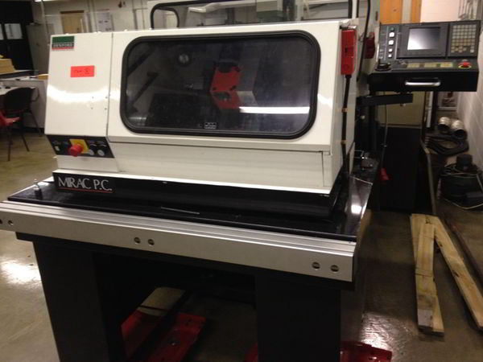

The Denford Mirac PC is a versatile 2 axis CNC bench turning centre, ideal for all levels of education and technical training.
Here is complete list of Denford Mirac PC CNC Lathe G & M Codes.

Denford Mirac PC CNC Lathe
Mirac PC G-Codes List
| G Code | Function |
|---|---|
| G00 | Positioning (Rapid Traverse) |
| G01 | Linear Interpolation (Feed) |
| G02 | Circular Interpolation CW |
| G03 | Circular Interpolation CCW |
| G04 | Dwell |
| G20 | Inch Data Input |
| G21 | Metric Data Input |
| G28 | Reference Point Return |
| G40 | Tool Nose Radius Compensation Cancel |
| G41 | Tool Nose Radius Compensation Left |
| G42 | Tool Nose Radius Compensation Right |
| G50 | Work Co-ordinate Change / Max. Spindle Speed setting |
| G70 | Finishing Cycle |
| G71 | Stock Removal in Turning – X |
| G72 | Stock Removal in Facing – Z |
| G73 | Pattern Repeating |
| G74 | Peck Drilling in Z Axis |
| G75 | Grooving in X Axis |
| G76 | Multiple Thread Cutting Cycle |
| G81 | Deep hole drilling (No FANUC) |
| G90 | Diameter Cutting Cycle A (Outer/Inner) |
| G92 | Thread Cutting Cycle |
| G94 | Cutting Cycle B (End Face Cycle) |
| G96 | Assessed Surface Speed Control |
| G97 | Assessed Surface Speed Control Cancel |
| G98 | Feed Per Minute |
| G99 | Feed Per Revolution |
Denford Mirac PC CNC Lathe G Codes M Codes
Mirac PC M-Codes List
| M Code | Function |
|---|---|
| M00 | Program stop |
| M01 | Optional stop |
| M02 | End of program |
| M03 | Spindle forward (clockwise) |
| M04 | Spindle reverse (counter clockwise) |
| M05 | Spindle stop |
| M06 | Automatic tool change |
| M08 | Coolant on |
| M09 | Coolant off |
| M10 | Chuck open |
| M11 | Chuck close |
| M13 | Spindle forward and coolant on |
| M14 | Spindle reverse and coolant on |
| M25 | Tailstock quill extend |
| M26 | Tailstock quill retract |
| M30 | Program stop and reset |
| M38 | Door open |
| M39 | Door close |
| M40 | Parts catcher extend |
| M41 | Parts catcher retract |
| M62 | Auxiliary output 1 on |
| M63 | Auxiliary output 2 on |
| M64 | Auxiliary output 1 off |
| M65 | Auxiliary output 2 off |
| M66 | Wait for auxiliary output 1 on |
| M67 | Wait for auxiliary output 2 on |
| M76 | Wait for auxiliary output 1 off |
| M77 | Wait for auxiliary output 2 off |
| M98 | Sub program call |
| M99 | Sub program end and return |
Fanuc 31i G Codes Machining Center – Fanuc 30i 31i 32i
Fanuc 31i G codes list for cnc machinists programmers who work on cnc machining centers with Fanuc 30i 31i 32i cnc controls.
Fanuc CNC Controls
Following list of g codes applies to following cnc controls as well.
- Fanuc Series 30i/300i/300is-MODEL A
- Fanuc Series 31i/310i/310is-MODEL A5
- Fanuc Series 31i/310i/310is-MODEL A
- Fanuc Series 32i/320i/320is-MODEL A
Fanuc 31i G Codes
| G Code | Description |
|---|---|
| G00 | Positioning (rapid traverse) |
| G01 | Linear interpolation (cutting feed) |
| G02 | Circular interpolation CW or helical interpolation CW |
| G03 | Circular interpolation CCW or helical interpolation CCW |
| G02.2, G03.2 | Involute interpolation CW/CCW |
| G02.3, G03.3 | Exponential interpolation CW/CCW |
| G02.4, G03.4 | Three-dimensional coordinate conversion CW/CCW |
| G04 | Dwell |
| G05 | AI contour control (high-precision contour control compatible command) |
| G05.1 | AI contour control / Nano smoothing / Smooth interpolation |
| G05.4 | HRV3,4 on/off |
| G06.2 | NURBS interpolation |
| G07 | Hypothetical axis interpolation |
| G07.1 (G107) | Cylindrical interpolation |
| G08 | AI contour control (advanced preview control compatible command) |
| G09 | Exact stop |
| G10 | Programmable data input |
| G10.6 | Tool retract and recover |
| G10.9 | Programmable switching of diameter/radius specification |
| G11 | Programmable data input mode cancel |
| G12.1 | Polar coordinate interpolation mode |
| G13.1 | Polar coordinate interpolation cancel mode |
| G15 | Polar coordinates command cancel |
| G16 | Polar coordinates command |
| G17 | XY plane selection |
| G18 | ZX plane selection |
| G19 | YZ plane selection |
| G20 (G70) | Input in inch |
| G21 (G71) | Input in mm |
| G22 | Stored stroke check function on |
| G23 | Stored stroke check function off |
| G25 | Spindle speed fluctuation detection off |
| G26 | Spindle speed fluctuation detection on |
| G27 | Reference position return check |
| G28 | Automatic return to reference position |
| G29 | Movement from reference position |
| G30 | 2nd, 3rd and 4th reference position return |
| G30.1 | Floating reference position return |
| G31 | Skip function |
| G31.8 | EGB-axis skip |
| G33 | Threading |
| G34 | Variable lead threading |
| G35 | Circular threading CW |
| G36 | Circular threading CCW |
| G37 | Automatic tool length measurement |
| G38 | Cutter or tool nose radius compensation : preserve vector |
| G39 | Cutter or tool nose radius compensation : corner circular interpolation |
| G40 | Cutter or tool nose radius compensation : cancel Three-dimensional cutter compensation : cancel |
| G41 | Cutter or tool nose radius compensation : left Three-dimensional cutter compensation : left |
| G41.2 | Cutter compensation for 5-axis machining : left (type 1) |
| G41.3 | Cutter compensation for 5-axis machining : (leading edge offset) |
| G41.4 | Cutter compensation for 5-axis machining : left (type 1) (FS16i-compatible command) |
| G41.5 | Cutter compensation for 5-axis machining : left (type 1) (FS16i-compatible command) |
| G41.6 | Cutter compensation for 5-axis machining : left (type 2) |
| G42 | Cutter or tool nose radius compensation : right Three-dimensional cutter compensation : right |
| G42.2 | Cutter compensation for 5-axis machining : right (type 1) |
| G42.4 | Cutter compensation for 5-axis machining : right (type 1) (FS16i-compatible command) |
| G42.5 | Cutter compensation for 5-axis machining : right (type 1) (FS16i-compatible command) |
| G42.6 | Cutter compensation for 5-axis machining : right (type 2) |
| G40.1 | Normal direction control cancel mode |
| G41.1 | Normal direction control on : right |
| G42.1 | Normal direction control on : left |
| G43 | Tool length compensation + |
| G44 | Tool length compensation – |
| G43.1 | Tool length compensation in tool axis direction |
| G43.4 | Tool center point control (type 1) |
| G43.5 | Tool center point control (type 2) |
| G45 | Tool offset increase |
| G46 | Tool offset decrease |
| G47 | Tool offset double increase |
| G48 | Tool offset double decrease |
| G49 (G49.1) | Tool length compensation cancel |
| G50 | Scaling cancel |
| G51 | Scaling |
| G50.1 | Programmable mirror image cancel |
| G51.1 | Programmable mirror image |
| G50.2 | Polygon turning cancel |
| G51.2 | Polygon turning |
| G52 | Local coordinate system setting |
| G53 | Machine coordinate system setting |
| G53.1 | Tool axis direction control |
| G54 (G54.1) | Workpiece coordinate system 1 selection |
| G55 | Workpiece coordinate system 2 selection |
| G56 | Workpiece coordinate system 3 selection |
| G57 | Workpiece coordinate system 4 selection |
| G58 | Workpiece coordinate system 5 selection |
| G59 | Workpiece coordinate system 6 selection |
| G60 | Single direction positioning |
| G61 | Exact stop mode |
| G62 | Automatic corner override |
| G63 | Tapping mode |
| G64 | Cutting mode |
| G65 | Macro call |
| G66 | Macro modal call A |
| G66.1 | Macro modal call B |
| G67 | Macro modal call A/B cancel |
| G68 | Coordinate system rotation start or 3-dimensional coordinate conversion mode on |
| G69 | Coordinate system rotation cancel or 3-dimensional coordinate conversion mode off |
| G68.2 | Feature coordinate system selection |
| G72.1 | Figure copy (rotation copy) |
| G72.2 | Figure copy (linear copy) |
| G73 | Peck drilling cycle |
| G74 | Left-handed tapping cycle |
| G76 | Fine boring cycle |
| G80 | Canned cycle cancel |
| G80.5 | Electronic gear box 2 pair: synchronization cancellation |
| G80.8 | Electronic gear box: synchronization cancellation |
| G81 | Drilling cycle or spot boring cycle |
| G81.1 | Chopping |
| G81.5 | Electronic gear box 2 pair: synchronization start |
| G81.8 | Electronic gear box: synchronization start |
| G82 | Drilling cycle or counter boring cycle |
| G83 | Peck drilling cycle |
| G84 | Tapping cycle |
| G84.2 | Rigid tapping cycle (FS15 format) |
| G84.3 | Left-handed rigid tapping cycle (FS15 format) |
| G85 | Boring cycle |
| G86 | Boring cycle |
| G87 | Back boring cycle |
| G88 | Boring cycle |
| G89 | Boring cycle |
| G90 | Absolute programming |
| G91 | Incremental programming |
| G91.1 | Checking the maximum incremental amount specified |
| G92 | Setting for workpiece coordinate system or clamp at maximum spindle speed |
| G92.1 | Workpiece coordinate system preset |
| G93 | Inverse time feed |
| G94 | Feed per minute |
| G95 | Feed per revolution |
| G96 | Constant surface speed control |
| G97 | Constant surface speed control cancel |
| G98 | Canned cycle : return to initial level |
| G99 | Canned cycle : return to R point level |
| G107 | Cylindrical interpolation |
| G112 | Polar coordinate interpolation mode |
| G113 | Polar coordinate interpolation mode cancel |